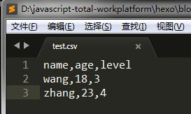
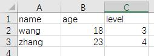
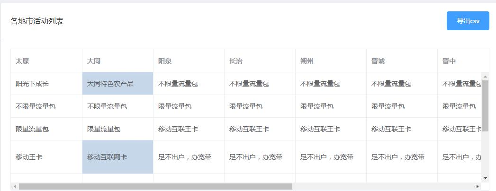
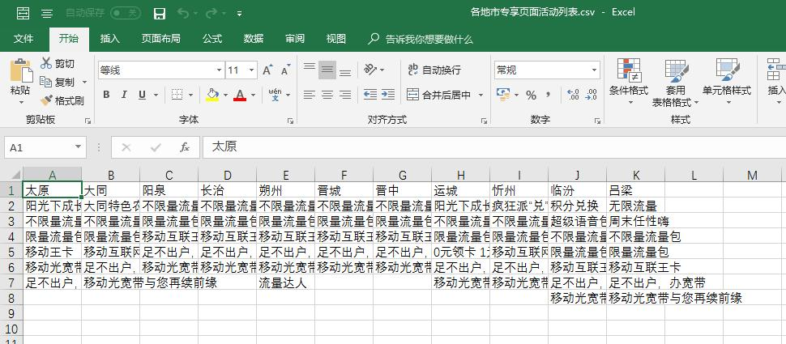

前端实现表格数据导出功能
将表格数据导出为文档是常见的功能需求，通常是借助后端来实现这个功能；
现在前端也可以直接导出文档了，CSV格式的文档；
CSV格式
CSV是comma separated values的缩写，是常用的数据文档格式之一，可以用excel文档等表格处理软件打开修改，但本质上是一个纯文本文件，格式相当简单：每一行数据为行，每一列数据由分隔符隔开。
先来试一下： 在sublime中输入如下文本，保存为test.csv  然后使用excel打开文档  果然可以! 那么导出时，只需要把数据转为纯文本，生成文件即可；
但由于CSV并未标准化，不同软件系统使用的行分隔符和列分隔符不一定相同，这为分析和转化增加了一些难度。再加上数据内容的格式（比如日期、金额等）会由不同的国家习惯和个人习惯造成不同，处理起来会有一些麻烦。
换行符
上面的图可以看出： * CSV文件格式单元格之间是通过,隔开的 * CSV文件格式里，换行是通过\n实现的
另外：
* 在Windows系统中，标准模式采用的是\r\n匹配Enter键
* 在mac系统中，用\r匹配Enter键
* 在Linux系统中，用\n匹配Enter键
因此，我们只要把相应的数据按照,和\n分隔就可以了
json to csv
前端的数据通常都是json格式，因此我们要做的是把json格式的数据转为csv的字符串； 可以自己造轮子来实现，不过目前已有开源库实现了这些能力，建议直接拿来用； json2csv：https://github.com/zemirco/json2csv API我就不贴了，可以在github上找到；
下载
下载方式根据不同浏览器提供不同方式
download属性
*chrome、firefox、safari、opera*支持a标签的download属性，可以借助此属性实现下载；
在<a>标签的href属性上配置hrefElement.href = 'data:attachment/csv;charset=UTF-8,\ufeff'+encodeURI(content);
\uFEFF是用来解决中文乱码的情况；
ie10/11和IEEdge
ie10/11和ieEdge使用 Blob 和 msSaveBlob 以本地方式保存文件
使用 Blob()构造函数，我们首先创建一个 Blob 对象，其参数是包含所需文件内容的数组
const csvData = new Blob([BOM + text], { type: 'text/csv' })
调用msSaveBlob下载文件
navigator.msSaveBlob(csvData, filename)
ie9之前的版本
ie9及之前的版本不支持download属性，也没有Blob对象，需要其他方式实现
const oWin = window.top.open('about:blank', '_blank') //打开一个新标签页
oWin.document.charset = 'utf-8'
oWin.document.write(text) //doument中写入数据
oWin.document.close() //关闭
oWin.document.execCommand('SaveAs', filename) //唤起下载窗口
oWin.close() //关闭标签页整体代码如下：
download (filename, text) {
if (has('ie') && has('ie') < 10) {
const oWin = window.top.open('about:blank', '_blank')
oWin.document.charset = 'utf-8'
oWin.document.write(text)
oWin.document.close()
oWin.document.execCommand('SaveAs', filename)
oWin.close()
} else if (has('ie') === 10 || this._isIE11() || this._isEdge()) {
const BOM = '\uFEFF'
const csvData = new Blob([BOM + text], { type: 'text/csv' })
navigator.msSaveBlob(csvData, filename)
} else {
const link = document.createElement('a')
link.download = filename
link.href = this._getDownloadUrl(text)
document.body.appendChild(link)
link.click()
document.body.removeChild(link)
}
}示例
下面是一个使用示例，可以看到导出csv只需要5行代码即可；
exportCsv () {
/* 引入json2csv */
const Json2csvParser = require('json2csv').Parser
/* 配置表头 */
const fields = ['太原', '大同', '阳泉', '长治', '朔州', '晋城', '晋中', '运城', '忻州', '临汾', '吕梁']
const json2csvParser = new Json2csvParser({ fields })
/* 设置数据 */
const csv = json2csvParser.parse(this.tableData)
/* 下载 */
ExportCsv.download('各地市专享页面活动列表.csv', csv)
}表格数据：  点击导出： 打开导出文档： 